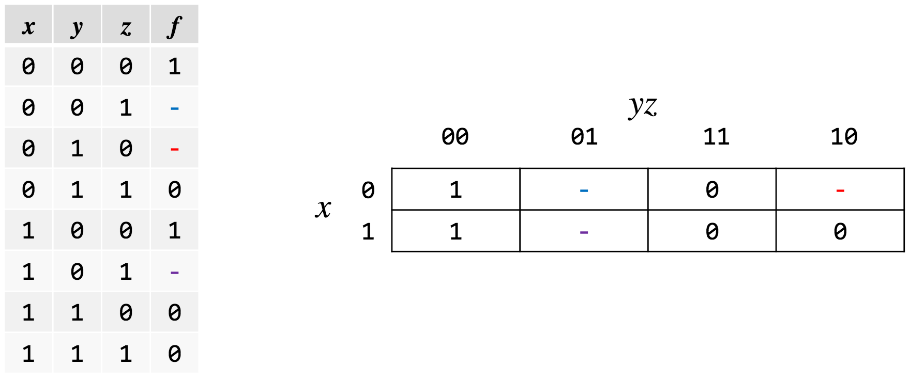
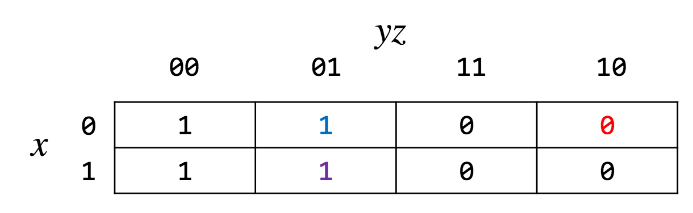

Karnaugh Maps
Introduction to Digital Logic - CPE2210 - 2 February 2018
What is the simplified function for F(w, x, y, z) = Σ(0, 2, 4, 6, 12, 14)?
| yz | ||||||
| 00 | 01 | 11 | 10 | |||
| wx | 00 | 0 | 1 | 3 | 2 | |
| 01 | 4 | 5 | 7 | 6 | ||
| 11 | 12 | 13 | 15 | 14 | ||
| 10 | 8 | 9 | 11 | 10 |
| yz | ||||||
| 00 | 01 | 11 | 10 | |||
| wx | 00 | 1a | 0 | 0 | 1a | |
| 01 | 1ab | 0 | 0 | 1ab | ||
| 11 | 1b | 0 | 0 | 1b | ||
| 10 | 0 | 0 | 0 | 0 |
The simplified function consists of groups a and b, which comprise: w’z’ + xz’
Don’t Care Conditions
Denoted by a hyphen
| x | y | z | f |
| 0 | 0 | 0 | 1 |
| 0 | 0 | 1 | 0 |
| 0 | 1 | 0 | - |
| 0 | 1 | 1 | 0 |
| 1 | 0 | 0 | 1 |
| 1 | 0 | 1 | - |
| 1 | 1 | 0 | 0 |
| 1 | 1 | 1 | 0 |
minterm canonical formula
f(x, y, z) = Σ(0,4) + dc(2, 5)
maxterm canonical formula
f(x, y, z) = Π(1, 3, 6, 7) + dc(2, 5)

This chart depicts a k-map with Don’t Cares, and since they are there, you can fill them with whatever you want.

In this case, filling it with 1s which will simplify our equation to y’